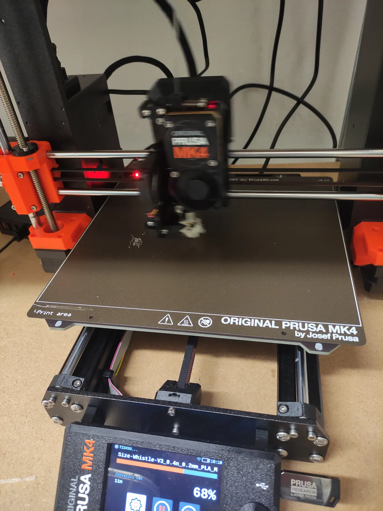
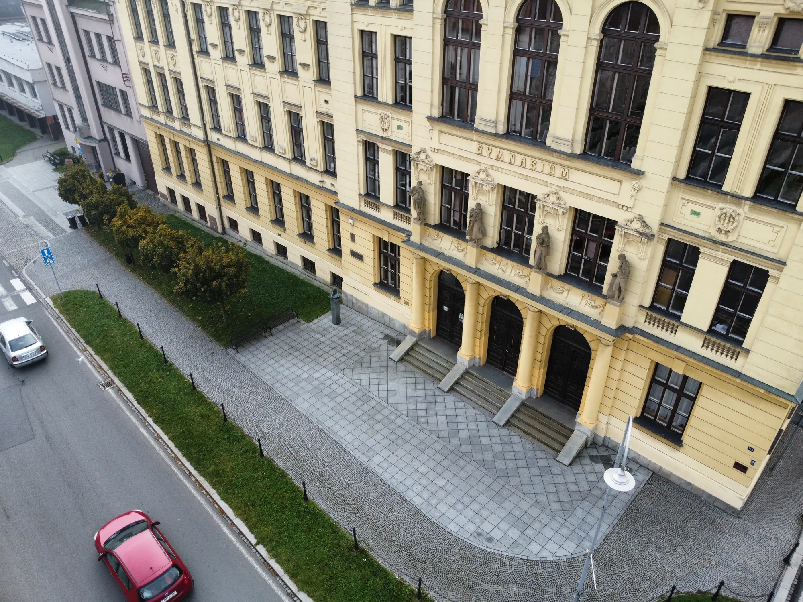
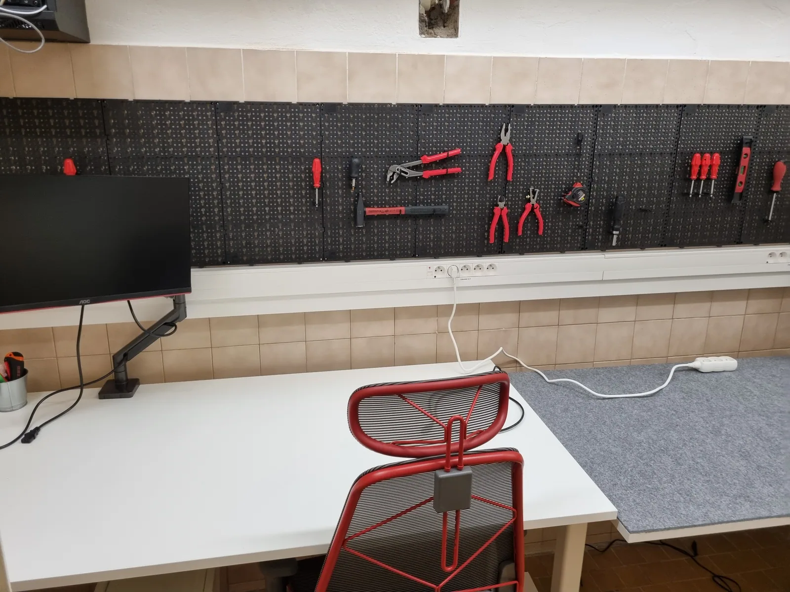
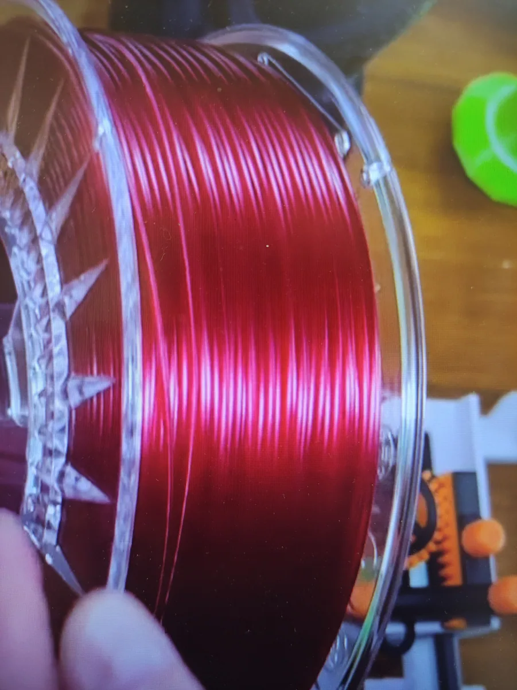
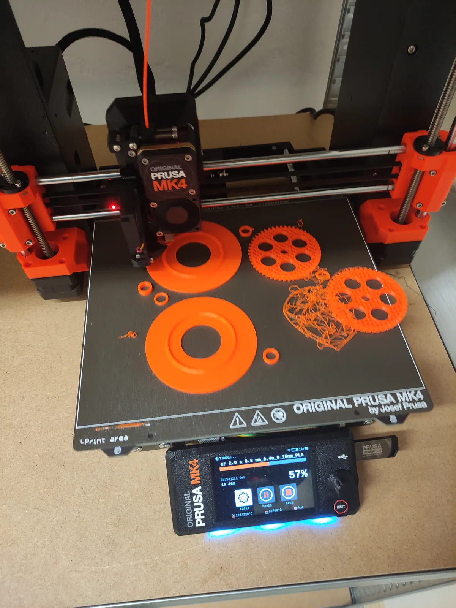

3D tisk
Sedm tiskáren Prusa Research: pět modelů MK4, jedna MK3 a jedna MINI. Od výukových pomůcek přes prototypy až po náhradní díly pro školu.


Design, kód a konstrukce, a to vše na gymplu. Místo pro 3D tisk, robotiku, elektroniku a programování, kde studenti získávají praxi na reálných zakázkách, v kroužku i v soutěžích. Překonáváme hranice učebnic.
Sedm tiskáren Prusa Research: pět modelů MK4, jedna MK3 a jedna MINI. Od výukových pomůcek přes prototypy až po náhradní díly pro školu.

Pájení, měření a oživování vlastních konstrukcí, od základních kleští a pájek až po CNC obrábění a vrtačku.
Sedm notebooků věnovaných sponzorem Aliance Laundry a jeden výkonný stolní počítač. Modelování, návrh desek i řídicí software pro naše zařízení.
Každou druhou až třetí středu se dílna plní. Nováčci dostanou do ruky pájku i klávesnici hned první den.
Gypri píšťalky visí za bezpečnostním sklíčkem v každé třídě. Navrhli, vytiskli a nainstalovali jsme je sami.
Slouží pedagogům k přivolání pomoci a koordinaci evakuace a jsou součástí školního krizového postupu. Vznikly celé v dílně: od prvního modelu až po umístění ve všech třídách.
Tiskneme je po stovkách. Někdy se zadaří a tiskárna jich vyplivne celou podložku naráz, jindy strávíme odpoledne laděním výšky tónu.


Vytváříme centrum praxe, kde se informatika potkává s robotikou, 3D tiskem a elektrotechnikou. Nabízíme prostor pro samostatnou práci, konzultace i sdílení nápadů.



Nikdo tu nesedí a neposlouchá. Někdo pájí, někdo řeší, proč se deska nenahodila, a někdo ostatním vysvětluje, co právě objevil.


Dveře č. 64, hned vedle výtvarky, v suterénu školy.
Masarykovo gymnázium, Jičínská 528, 742 58 Příbor.
Napište nám na dilna@gypri.cz
nebo zavolejte na +420 605 089 399.

Minimálně jednou za měsíc, ve dveřích č. 64. Nemusíš nic umět. Stačí přijít s nápadem, nebo jen se zvědavostí.